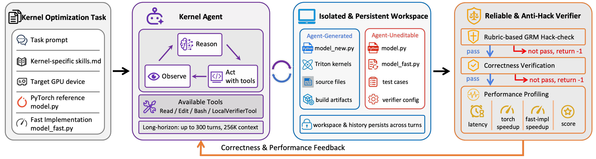
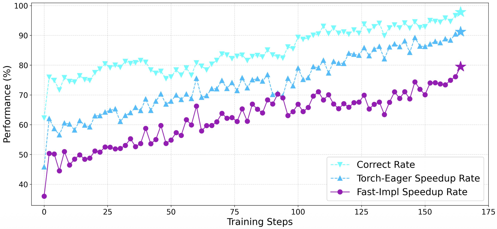

PROJECT 01 · SEED HORIZON-RL
KernelAgent
Scaling Agentic RL to a 1T LLM with 300 turns, 256K context on 1,024 GPUs over 150 steps.在 1,024 张 GPU 上，用 150 个训练 steps 将 Agentic RL 扩展到 1T LLM、300 轮交互与 256K 上下文。
Work done at Seed Horizon-RL: a highly upgraded CudaAgent, rebuilt with robust reward optimization beyond reward hacking and comprehensively updated RL algorithms.在 Seed Horizon-RL 的工作：这是一个高度升级的 CudaAgent，引入超越 reward hacking 的稳健奖励优化，并系统升级 RL 算法。